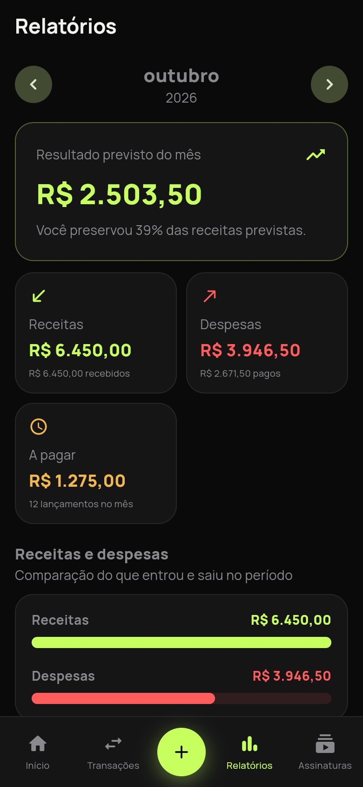

Ecossistema
Três produtos. Um propósito.
Cada ferramenta resolve um problema do dia a dia e segue as mesmas regras: funciona offline, é auditável e não vende seus dados.

Fluxo+
Disponível · v0.6Finanças pessoais offline-first. Despesas, metas e relatórios no seu aparelho, em Android, Windows e Linux.
Ver produto
Fluxo Escalas
BetaGestão de escalas e turnos para pequenas equipes, com folgas, conflitos e banco de horas.
Ver produtoFluxoCheck
Em desenvolvimentoChecklists com histórico, alertas e relatórios de conformidade.
Ver produtoPrincípios
Feito para durar no seu aparelho.
Funciona sem internet.
SQLite local. Registrar despesa, consultar saldo e ver histórico funcionam sem rede. A sincronização com a nuvem é opcional e nunca bloqueia o uso.
Nada sai do seu aparelho.
Banco criptografado com SQLCipher. Seus dados não passam por nenhum servidor nosso. Sem analytics de comportamento, sem rastreamento de padrão de gastos.
Código aberto, auditável.
O Fluxo+ é open source no GitHub. Você lê o que quiser, contribui ou cria seu próprio fork. Nada escondido.
Software sólido começa aqui.
Android, Windows e Linux. Sem conta obrigatória. Sem rastreamento.
Grátis no básico · Premium R$ 9,90/mês